Seminar Guide
Seminar Guide
Seminar Guide
The Gymnastics Course
Participant Manual

2026 edition
© 2026 BirdBox Coaching Limited. All rights reserved.
No part of this manual may be copied or shared without written permission.
BirdBox Coaching Limited · 19 Baggot Street Lower, Dublin 2, D02 X658, Ireland
birdboxcoaching.com
Chapter 1
The Gymnastics Course is a professional coaching development seminar. Led and developed by a team of expert-level coaches from around the world aimed to create and elicit potential from professional trainers, coaches, gym owners and athletes. We hope to play a role in your ability to better train and grow towards your fitness goals. Our goal is to utilize the information and methodology of gymnastics and body movement to augment your training and coaching as we have for over a decade.

This PDF is a supporting document for things you will discover when attending our live seminar. This supporting document has been designed to help prompt, remind, and facilitate learning. Allowing you to emerge within the learning environment and become an active learner when attending our course. Please note that this PDF does not capture every single discussed element in our course.
Suppose you would like to explore a more profound learning opportunity with The Gymnastics Course, enhancing your live seminar learning. In that case, you can also learn interactively online with our self-paced online course. We provide a significant discount to all live seminar participants, helping to build a deep and well-rounded learning experience. The following PDF will have images and explanations that follow our critical points for the CrossFit Gymnastics seminar. There will be allocated spaces through this PDF for you to add your own notes as you pass through this course. Aiming to help you actively retain information in the best possible way.
Chapter 2

Chapter 3
An Athlete - An athlete is someone with the elite ability to compete and win against others. A relative marker for an athlete would be competing at the CrossFit Games or taking a top 5 position at a CrossFit sanctioned event.
Needs Analysis - Needs Analysis is a formal, systematic process of identifying and evaluating training that should be done to help develop an athlete towards the requirements of their sport, life or injury.
Rules - A rule is based on principles; they are suggested standards to help correct and safely develop an athlete; a rule can be broken and is governed by yourself or a coach.
Laws - A law is a much stricter rule that is bound to be adhered. Breaking the law is not an option as this is restricted by science. For example, Newton's gravitational laws cannot be changed or bent.
Virtuosity - Virtuosity, though, is a different beast altogether. Virtuosity is defined in gymnastics as “performing the common uncommonly well.” (Greg Glassman, 2005)
Mastery - Mastery is defined as “the improvement of an athlete’s skill to effectively use his or her motor potential” (Birdbox coaching development, 2020)
Active Tissue - Active tissue is the ability to contract muscles helping to maintain shapes, as an entirety, to help remain as one solid unit.
Hollow - A position used to create stability, characterized by strong midline contraction with active tissue from toes to fingers. Remember that a hollow position is a straight line with a posterior pelvic tilt.
Strict - Movement absent a kip. The athlete relies on muscle control and strength to complete the movement.
Kip - An aggressive change of direction at speed that leads to a change in plane or position to achieve a movement pattern.
Form - The manner or method of doing a movement correctly while striving for perfection.
Static Apparatus - Stable and does not move (floor and bars).
Dynamic Apparatus - Unstable and moves (rings).
Mobility - Movement around a joint.
Active Flexibility - Contracting opposing muscles to stretch or hold a position.
Passive Flexibility - Stretching a muscle that does not require contraction of opposing muscles.
ROM - Range of motion.
EROM - Extended range of motion.
Spotting - Giving assistance to an athlete if needed as part of a progression or to prevent injury.
Tension - Tension, as a word, can be defined as "the state of being stretched tight" and the opposite would be "slackness" or "looseness" (Fowler & Crystal, 2010).

Chapter 4
We at The Gymnastics Course highlight that CrossFit is a core strength and conditioning training program. Therefore, when working with an athlete or client, we should do a needs analysis. Understanding an athlete's needs and requirements, their sport or life requirements, and designing their training program around the discrepancies between the two.
Gymnastics is purely bodyweight movement. Consequently, how you move your body through space, we theorize that we must be focusing on gymnastics before metabolic conditioning as this is our basis for movement, biomechanics. If an individual was to have poor biomechanics (human movement), it can be suggested the ability to achieve metabolic conditioning would be void or at risk of injury.
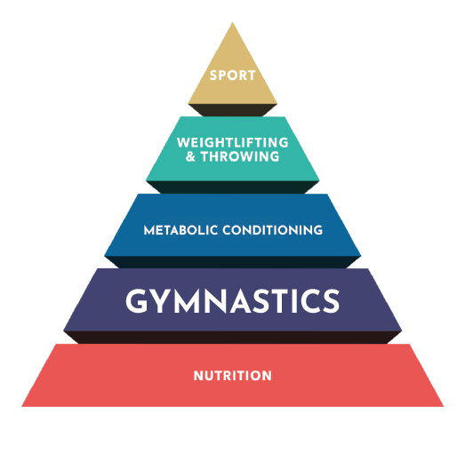

Chapter 5
Rule number 1: Static before dynamic
Rule number 2: Strict before kipping
Strength is required for proper form, and proper form is required to demonstrate body control. As such, gymnastics has a clear emphasis on strength in bodyweight movements. More than anything else, strict form establishes mastery in a movement, and for this reason, we promote strict movement before we apply momentum. The strength gained from mastering the strict movements are well worth the effort, and the possibility of injury is reduced substantially when strict movements are practiced first. Small moves will bring great rewards. You do not rush these movements. You learn them and earn them!
To present mastery in all our movements, we must have virtuous body awareness and control. To gain this body awareness and control, we must execute all actions with proper form. To obtain the proper form, we must have the prerequisite strength through the full range of motion, start to finish. Any lack of strength through a range of motion will compromise a position that causes forces to be sent in the wrong directions. Alternatively, no action will happen as the strength is nil.
When aiming to develop an athlete’s movement, we explain a process allowing coaches to find greater effectiveness. Options as a coach for movement development changes are coaching cues, coaching constraints, and coaching interventions.
“Strength is imperative for Proper Form,
and Proper Form is imperative for Body Awareness and Control.”

Rule number 3:
Build an isometric base.
Rule number 4:
Use eccentric loading as a strength and positional development tool.
Isometric contractions are where the muscle is under load or tension by remaining the same length. Isometric training is essential for joint stabilization and connective tissue development. Eccentric loading is where a muscle is under load or tension, but the muscle is lengthening. Eccentric will lead to many noted benefits, specifically muscle architecture changes leading to strength development. Concentric contractions are where a muscle is under load or tension, but the muscle shortens at the same time. We perform concentric contractions in CrossFit® all the time. Thus, we must consider how we develop strength in our members and the risks of each contraction tool—these risks are outlined to you during our programming lecture on the course.
Chapter 6
Coaching cues are directed at the athlete to make a positional change by using verbal communication.
Coaching constraints are tasks or exercises that do not intervene with the length or strength of a muscle but help make an individual work hard towards better positions within a chosen movement.
Coaching interventions are used when cues and constraints become ineffective. Leading to the change in length or strength of muscle tissue, aiming to improve movements.
Throughout the live seminar, we provide multiple aspects of coaching cues, interventions and constraints. An illustration of how to effectively decide when to use a cue, constraint or intervention can be seen below.
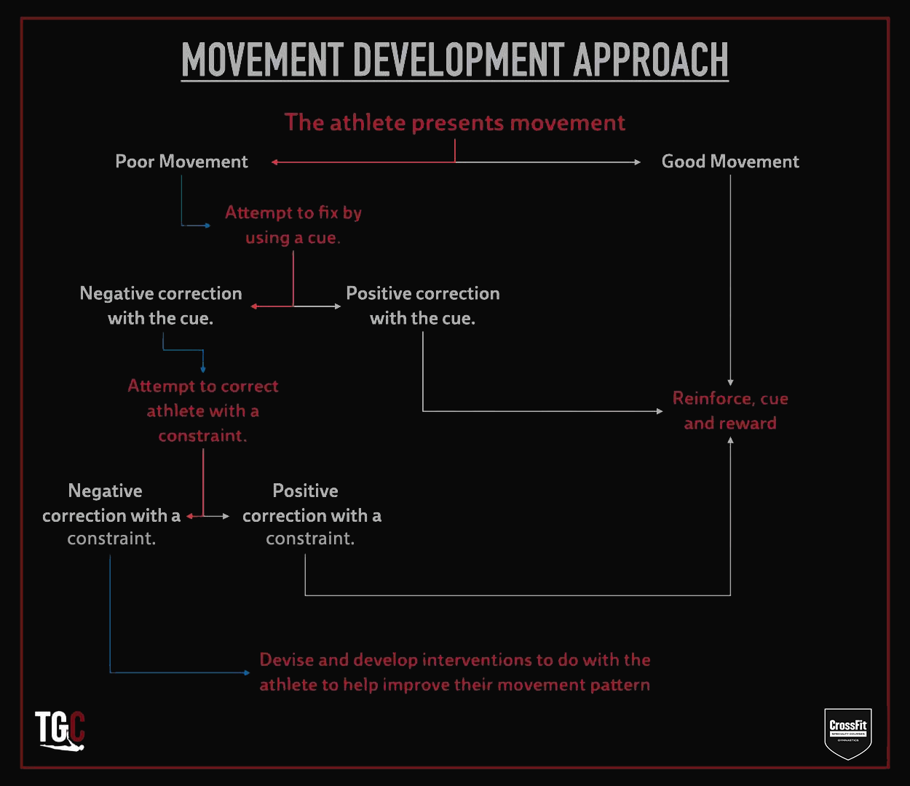
Chapter 7
As an athlete and/or coach, it is crucial to understand positions in movements. Here we will be presenting a series of images that showcase key positions for development. By understanding and practicing these key positions, you can develop your skills, improve your performance, and reduce the risk of injury.
We encourage you to proactively add notes to each image if we go through them in the seminar and incorporate these positions into your training routine.


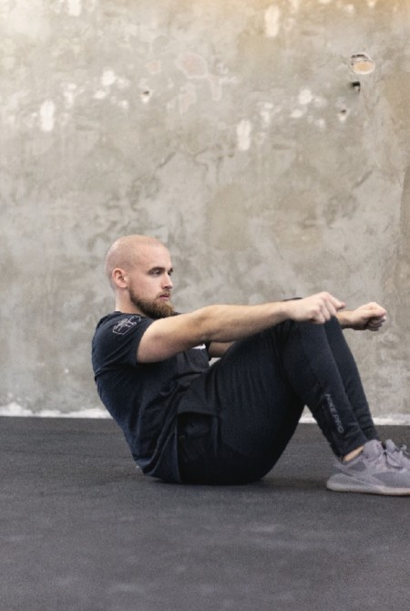


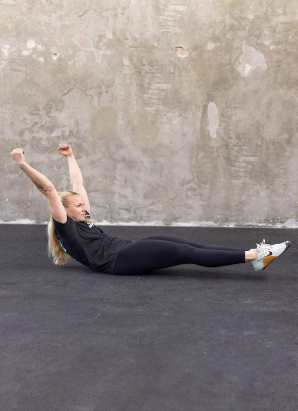
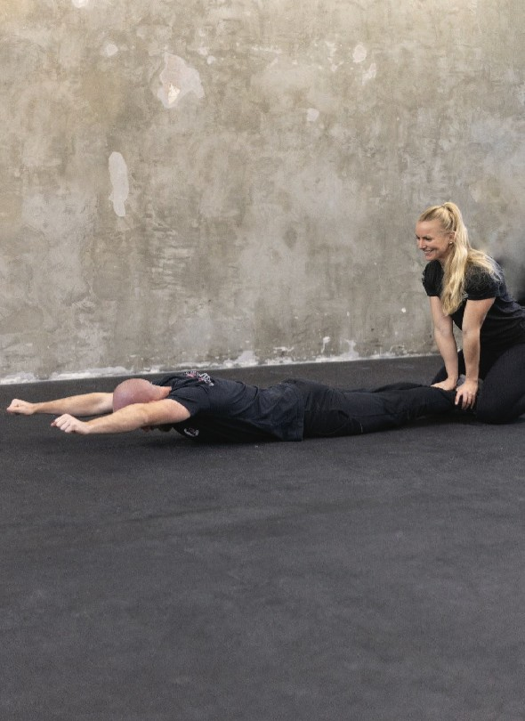

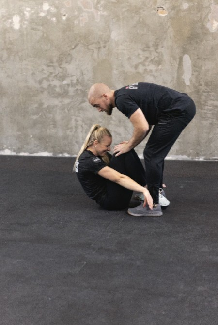


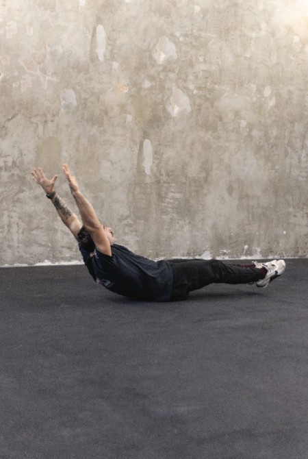


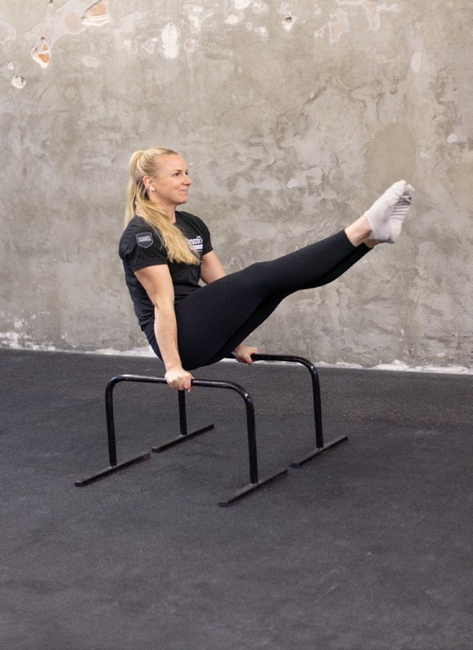


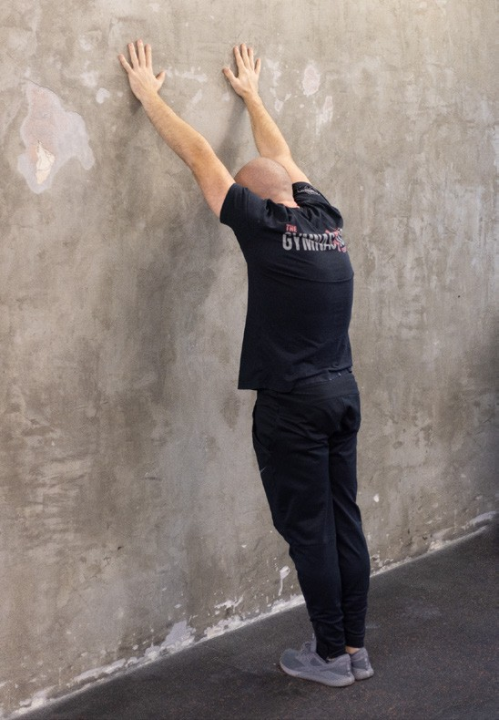


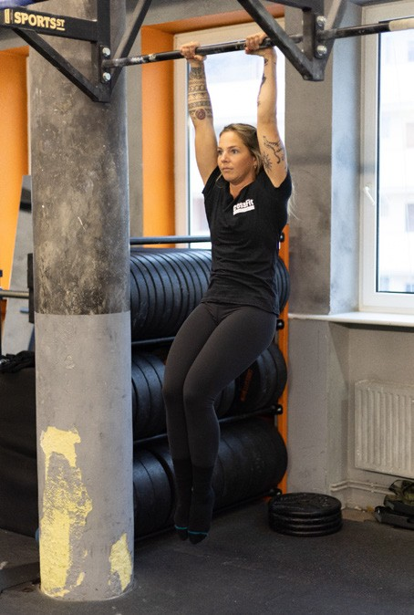


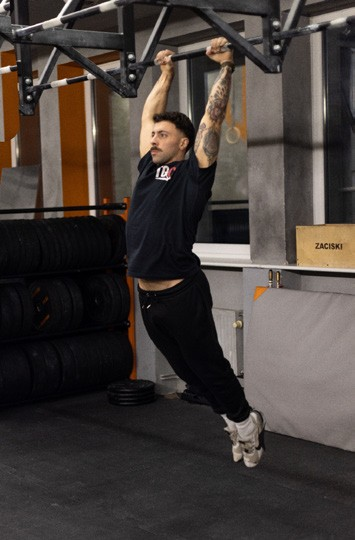


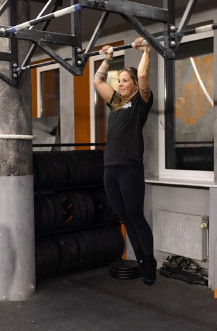
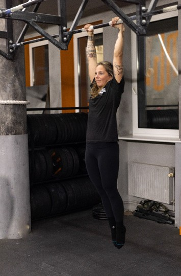

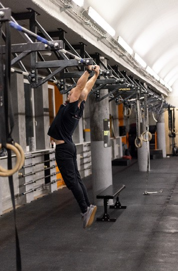


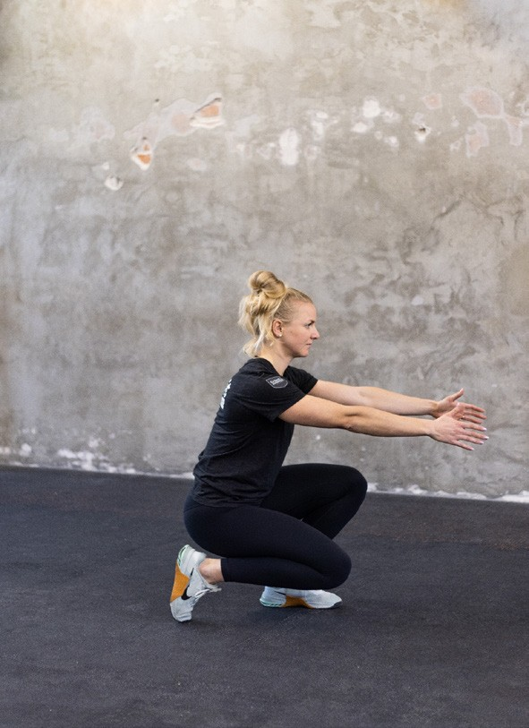

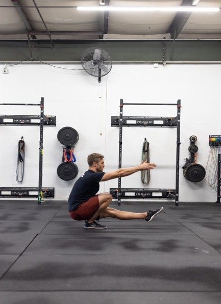

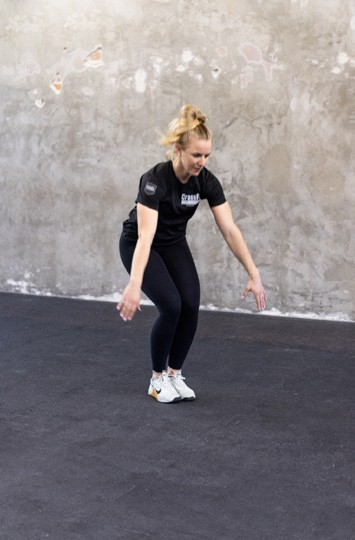


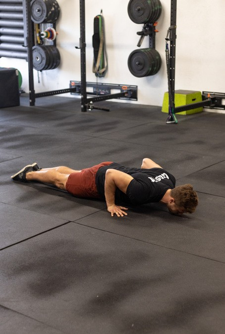


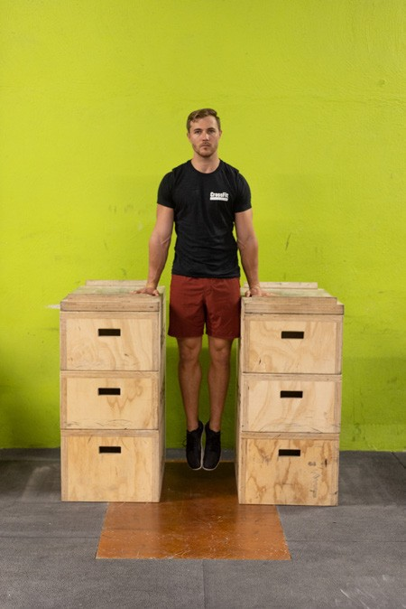


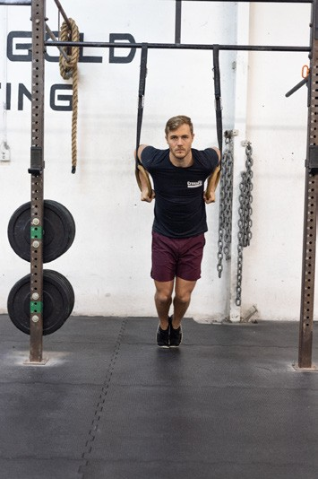


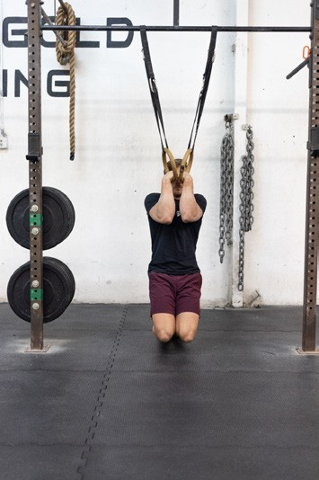


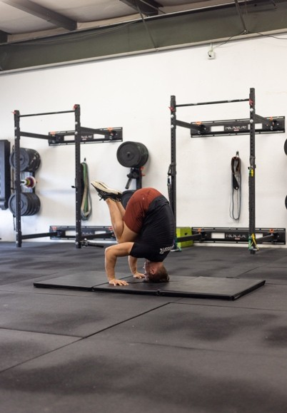
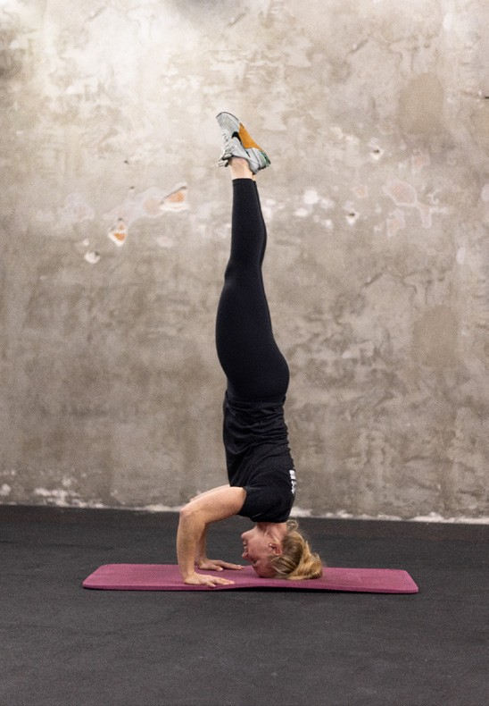


Chapter 8
During the programming lecture we go much more in depth. Here we would like to share some key elements from this lecture. We cover a lot of important information, but here we are highlighting a few key takeaways.
Linear progression is a training method that involves gradually increasing the difficulty or volume of an exercise over time to stimulate progress and adaptation. This method is commonly used in strength training to help athletes develop the strength and endurance necessary to perform more advanced movements or lifts. By using linear progression in training, athletes can gradually increase their strength and endurance in a safe and effective way. It's important to note that linear progression should be used in conjunction with proper form and technique to avoid injury and ensure optimal results. We like to use this linear progression method in our gymnastics programs.
Many people use percentages in their weightlifting, but not many people use percentages in their gymnastics. In gymnastics, intensity is the % of 1RM or TUT (time under tension). The total volume is the total amount of reps or total time under tension.
Below you will find two linear progression examples for strict pull-up development. As you can see, we always frontload the first set of the session so we can create progressive overload. We like to start this progression with 40%. The first example below is based on a max set of 10 strict virtuous pull-ups.
Linear progression example with % of 1RM:
| Week | Session 1 | Session 2 | Session 3 |
|---|---|---|---|
| 1. | 4-4-4 | 5-4-4 | 5-5-4 |
| 2. | 5-5-5 | 6-5-5 | 6-6-5 |
| 3. | 6-6-6 | 7-6-6 | 7-7-6 |
| 4. | 7-7-7 | 8-7-7 | 8-8-7 |
| 5. | 8-8-8 | 9-8-8 | 9-9-8 |
| 6. | Retest | ||
*Start this cycle again with your new number of your max set.
If you are unable to do a strict pull-up, we need to develop strength and we will do this by working on time under tension. In this case, start with the progression example below. The first number is for a chin-over-bar hold and the second number is for the eccentric. Jump up to position to start your set. If you are unable to control and hold these positions with your full bodyweight, scale it down by using a toe-spot.
Linear progression example with TUT:
| Week | Session 1 | Session 2 | Session 3 |
|---|---|---|---|
| 1. | 3/3 - 3/3 - 3/3 | 4/4 - 3/3 - 3/3 | 4/4 - 4/4 - 3/3 |
| 2. | 4/4 - 4/4 - 4/4 | 5/5 - 4/4 - 4/4 | 5/5 - 5/5 - 4/4 |
| 3. | 5/5 - 5/5 - 5/5 | 6/6 - 5/5 - 5/5 | 6/6 - 6/6 - 5/5 |
| Retest | Retest your strict pull-up. If you are able to do one, continue with session 1, week 4. If you are unable to do one, continue with front loading the seconds on your set. If you used a toe-spot the first three weeks, start over with week 1 and use your full bodyweight. | ||
| 4. | 1-1-1 | 2-1-1 | 2-2-1 |
| 5. | 2-2-2 | 3-2-2 | 3-3-2 |
| 6. | 3-3-3 | 4-3-3 | 4-4-3 |
*If you managed to complete the full progression, you can now start over with the % example.
You can apply this progression to every gymnastics movement. This is a very simple approach and easy to apply in your programming. Maybe even for the most of your membership base the best approach.
If you want to play with volume, intensity and frequency for individual programming and you want to understand this more in depth, below you can find another example of a linear progression with more variability in volume, intensity and frequency.
*Example below is based on a max set of 10 strict virtuous pull-ups.
| Week | Intensity | Frequency | Volume |
|---|---|---|---|
| 1. | 3 sets at 40% 4-4-4 | 2 sessions per week | 24 reps |
| 2. | 3 sets at 40% 4-4-4 | 2 sessions per week | 24 reps |
| 3. | 3 sets at 50% 5-5-5 | 2 sessions per week | 30 reps |
| 4. | 3 sets at 50% 5-5-5 | 2 sessions per week | 30 reps |
| 5. | 4 sets at 40% 4-4-4-4 | 2 sessions per week | 32 reps |
| 6. | 4 sets at 40% 4-4-4-4 | 2 sessions per week | 32 reps |
| 7. | 3 sets at 40% 4-4-4 | 3 sessions per week | 36 reps |
| 8. | 3 sets at 40% 4-4-4 | 3 sessions per week | 36 reps |
As you can see the intensity, volume and frequency is the same for every two weeks. After the first two weeks we increased the intensity. After the third and fourth week we reduced the intensity for week five and six but increased the volume. In week seven and eight we increased the frequency. By playing around with volume, intensity, and frequency you can see how those numbers are going up. You can apply this as well to isometric contractions or eccentric loading.
In the example you can see the volume in gymnastics is low. In weightlifting you will not gain overload by doing it at this volume. In gymnastics we gain overload in adaptations by time under tension and tempo work, not by volume. Occasionally we can use higher volume, but it is the time under tension and tempo we really need to be using.
That means that if we do our set of 4-4-4 strict pull-ups we will hang in a hollow for 5 seconds, do a 3 sec concentric, hold our chin above the bar for 3 seconds, do a 5 sec eccentric down for all the 4 repetitions. We want to train positions and perfection, not volume and intensity.